Brad
Neuberg, bkn3@columbia.edu
Hoang Dinh, hoang@lucaspapaya.com
Abstract
This paper describes a radical new vision of the World
Wide Web and browsers that deeply embed collaboration and editing.
What if community and editing were a central and transparent part of the web and browsers?
What if the web was extremely integrated for usability, with instant messaging, site creation, the web server, and more all integrated into one whole?
What would this web look like if despite being integrated it was massively decentralized on a peer-to-peer network, able to exist and run without businesses or governments?
The
answer is a web where people, collaboration, and usability are first
class citizens. This paper is a thought experiment launched from
these questions, a vision of how the web will be
drastically different when it supports seamless community as a
major component of the browser. The goal is to expand and consider
ideas and technologies that push the boundary of what is technically
possible. Engineering constraints and pragmatism are extremely
important but can sometimes limit designers from imagining new ways of
structuring software. Rather than focus on the technical how this paper focuses on the what in order to stimulate thought
beyond
current engineering capabilities, providing future possibilities that
research and coding efforts can steer toward.
This paper describes a new web browser, named Paper Airplane, and a new World Wide Web, called The Two Way Web. This new system has two components: native support for collaboration and massive decentralization of the new web's technical plumbing.
Paper Airplane and the Two Way Web are an extension of WikiWiki's, special web sites in which anyone can add and edit content within the browser. Paper Airplane generalizes Wikis across the entire web, bringing them into the browser and transforming what the web could be. Why can't the browser natively support powerful editing, collaboration, and messaging tools so that every web site can choose to be as transparent and grassroots as traditional Wikis are? Further, the browser itself becomes a platform for hosting this new web; every web browser is also a web server that collaborates with other browsers in a peer-to-peer network, creating a rich system of nodes that provides decentralized and transparent services such as storage, search, naming, and more.
Paper Airplane and the Two Way Web do
not exist; they are a series of user-interface mockups and a vision
for what a new version of the web could look like. This paper
explains the vision by presenting the major portions of this new
network and providing a UI walkthrough.
Unifying editing and community into the browser is not new; it is an integral piece of Tim Berners Lee's vision for the web. The first web browser, WorldWideWeb for the NeXT machine, included an editor and annotation tools. Other prior work on editing and the web includes Ward Cunningham's WikiWiki; the Netscape Communicator suite of tools, which included an editor, email client, news client, and browser; and Dave Winer's work with Edit this Page, Manila, and XML-RPC. The blogging community has also been exploring similar ideas in the context of blogging.
Collaborative hypertext is also not new; Douglas Englebart included it in his NLS presentation and system, while Ted Nelson describes a vision for a collaborative web of documents and editing in his Xanadu vision.
Work has also
occurred on turning a P2P network of nodes into a decentralized
storage system for ease of publishing; some example systems are
MojoNation, MNet, and FreeNet. The history of
unified collaboration tools is also long, including such software as
Lotus Notes and
Groove.
Paper Airplane & The Two Way Web
The vision of Paper Airplane and the Two Way Web is composed of the following major pieces: Instant Site Creation, the P2P Mesh, the Editor, Instant Messaging, the Smart Browser, and the Two Way Web Directory.
First is a web browser that supports Instant Site Creation by including everything necessary to create and serve web sites; there is no separation between browser and server. Every browser is automatically a server and can handle requests for web sites, and includes wizards for creating sites. The Instant Site Creation tools also support the full spectrum of public and private, allowing everything from completely private work groups to completely editable public sites.
Once the site is set up and users are viewing pages, they can use The Editor to create and edit pages. The Editor is a full-featured word processor built into the browser, an Internet-focused light office suite. Unlike existing packages such as Microsoft Word, this new editor is focused on web-based collaboration rather than printing pretty documents. Further, this Internet-centric editor has one click editing and saving; no more FTP or uploading files. Editing and saving documents is now similar to WikiWikis, but far more powerful and brought into the browser.
Instant
Messaging is integrated into every web site, including the
editor. Every web site now supports instant messaging, so that as
you browse a site you can communicate with that site's members. You
can edit documents in the editor while communicating with others who
are also editing that document, collaboratively creating a page using
synchronous edit tools.
Further, instant messaging for a site hooks into how public or
private you decide to make your web community during the Instant
Site Creation process, empowering site creators to choose how they want
instant messaging to work.
The Smart Browser is a new concept for the browser's relationship with a site. The browser now includes many things that used to be on the server, standardizing and making many common tasks much simpler across the web. For example, the browser includes single sign-on, so that users can sign into the browser itself on startup and then authenticate against other sites automatically. The Smart Browser vision also includes many tools for working with and viewing web sites in much more sophisticated ways, including searching, tagging pages, viewing pages by tags, tracking site changes, automatic indexing, and more.
The Two Way Web Directory is a Yahoo-like portal that is decentralized and which makes it easy for users to find and search the Two Way Web. During site creation using the Instant Site Creation tools inside the browser, users can choose up to three tags to describe their site, such as Politics and Campaign Finance Reform, for example. This information is stored in the P2P Mesh in such a way that a Yahoo-like index can be shown to end-users in the browser, generated from all of the tags. This directory also supports Google-style searching. No one company or entity controls this virtual Yahoo; it appears to the end-user as a centralized, easy to use website but is in fact a fantasy, a creation put together by the Paper Airplane browser while communicating in the P2P Mesh.
The browser hooks
into a
peer-to-peer network of all other Paper Airplane browsers that are
running named the P2P Mesh. The Two Way Web is actually a
virtual illusion created from all running Paper Airplane browsers, a
co-creation of many browsers autonomously creating a P2P Mesh. These
browsers work cooperatively to do routing, distributed naming,
automatic provisioning of storage and replication, etc. When a user
wants to create or save a website using the Paper Airplane browser,
they do
not have to worry about storage or uploading files; Paper Airplane
works with the cooperative P2P Mesh to
automatically get the user started without having to know how to set
up a web server, save files, or configure DNS.
This walkthrough describes the five major pieces of Paper Airplane: Instant Site Creation, The Editor, Instant Messaging, The Smart Browser, and the Two Way Web Directory.
At first glance Paper Airplane looks like a normal browser, but with one extra piece, a special toolbar that is the jumping off point for accessing an extensive suite of tools for the creation of advanced online communities, collaboration, and editing:
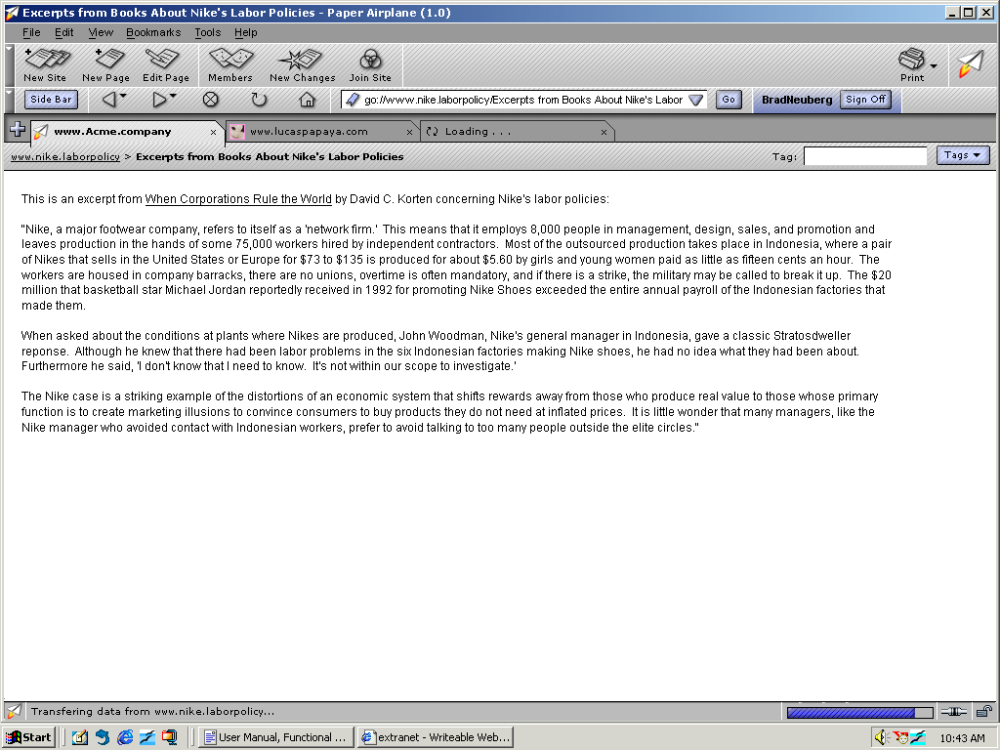
The first major step in empowering users to collaborate
is to make it drop dead simple to create online web sites. To do
this, users simply click on the New Site Button in the Edit toolbar:
Clicking the New Site Button leads a user to the New Site Wizard. This wizard guides users through everything necessary to create advanced online collaborative web sites. In several simple steps a user can choose a domain name and ending from an expanded, new domain name system called DisDNS; enter tags that will be used to autocategorize their site later in the Two Way Web Directory; and choose how public or private they would like to make their site.
You may be familiar with domain endings from the older World Wide Web, such as .com and .org. This system is fraught with problems: it is beauracratic; the endings that are available are tightly restricted; creating and registering domain names is expensive and time-consuming; and the system itself is controlled by an un-accountable international organization. Paper Airplane leaves this system in place for older web sites, but replaces it for the new Two Way Web.
This new domain name system, known as the Distributed Domain Name System (DisDNS), brings a host of new, easy to use capabilities to users. First, it now includes hundreds of endings, such as .love, .environment, .politics, and more. For example, users can create Two Way Web Sites such as www.nike.laborpolicy and www.microsoft.antitrust, or could share their online poetry community with the world at www.poetry.community. Users can type these new domain endings right into the Paper Airplane browser to reach their Two Way Web Sites, just like normal sites. Users are guided in choosing a domain name and ending in the New Site Wizard:
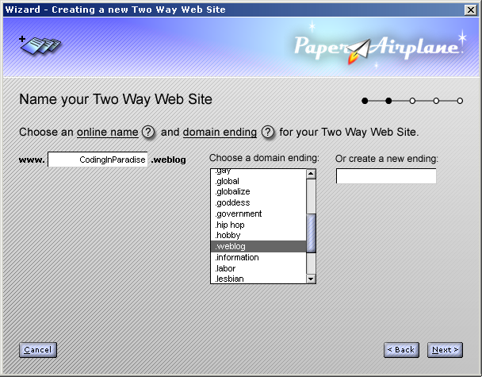
This step of the wizard even makes it possible for users to create entirely new Top Level Domain endings!
Once a domain name is chosen, a user then chooses
several tags for categorizing their site. These tags are totally up
to the user and will be used later to create a spontaneous folksonomy
directory of new Two Way Web Sites that other individuals can use to
find sites that match their interests:
The New Site Wizard also allows a user to select how public or private they would like to make a web site. Collaboration should support many different modalities of public and private, from completly open and anarchistic Wiki-like sites to absolutely closed private Intranet-style sites.
Paper Airplane achieves this by defining several simple roles that users can have and how users are given these roles. Two Way Web Sites have three roles: Managers, Members, and Non-Members. Managers can add and remove people, and can edit and delete pages, while Members can create and edit pages, but can not delete them or manage other members. What Non-Members can and can't do depend on how open or closed you decide to make your site.
The New Site Wizard allows site creators to define how members are given roles and how much power non-members have in the site:
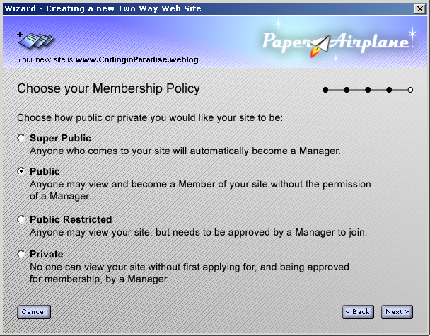
Four different kinds of sites are possible using this wizard:
Super Public, which is basicly akin to a completely open, Wiki-like site where everyone is automatically a Manager and can therefore do anything they like to the site
Public Sites, where anyone can become a Manager after registering; this is almost as open as Super Public but creates a small amount of friction.
Public Restricted, where anyone can view the site but existing Managers must approve their joining in order for them to become Managers and Members themselves.
Private Sites, in which no one can even view the site, much less edit it, unless they were pre-invited by existing Managers.
When a user is finished with this Wizard, the Paper Airplane browser creates the Two Way Web Site on the user's local machine and in the P2P Mesh and registers the new domain name in the DisDNS system. Users do not have to find a server provider, storage, or fish out their credit cards to pay and register a domain name, since the peer network itself resolves and finds domain names (more on this in the section titled P2P Mesh).
Finally, the user is presented with the first, new, unedited page of their Two Way Web Site that provides getting started options:
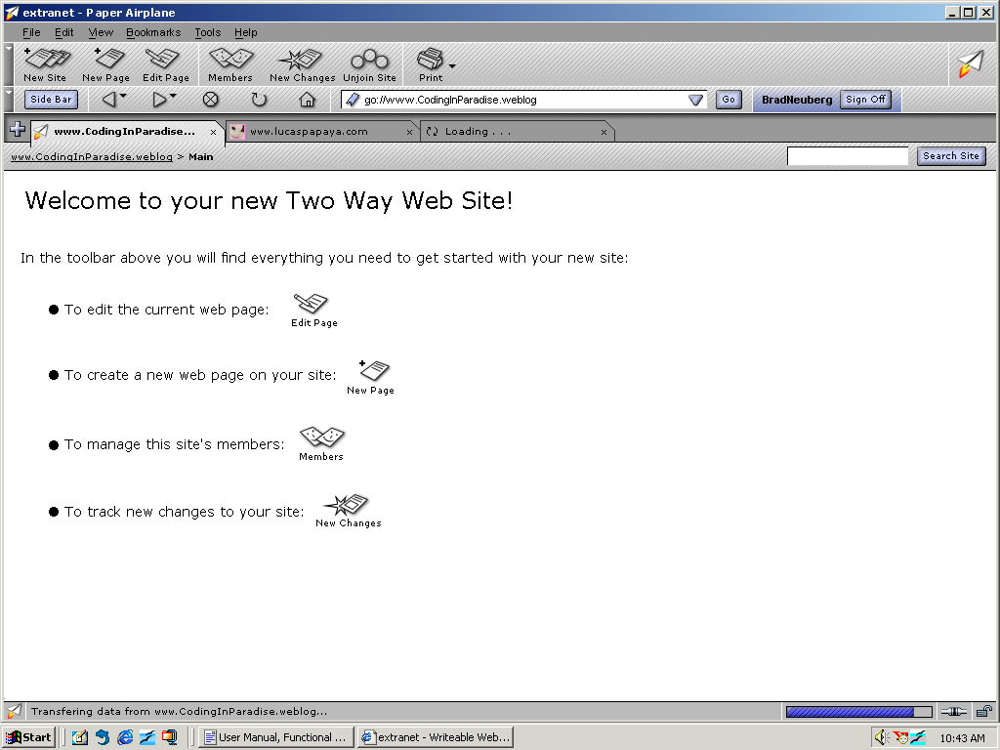
At this point, a user can now engage The Editor to start editing and creating their site.
Every web page you visit in a Two Way Web Site can be edited by pressing the Edit Page icon, if the site is public or if you are a member:
Once pressed, the browser shifts into an editor, where this page can be edited in place without shifting into a different program or spawning a new window:
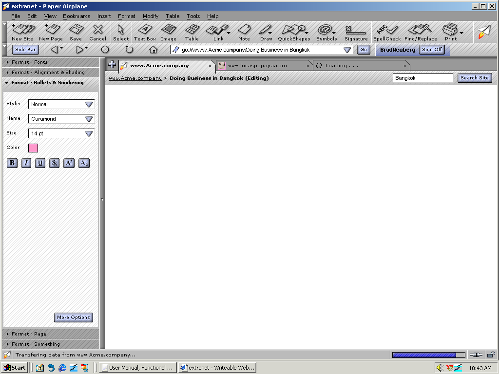
This editor is a full featured office suite that is focused on creating collaborative web pages rather than printing pretty documents, as existing office suites like Microsoft Word are. First, the editor is WYSIWYG, so creating and editing pages is easy for mainstream users. Second, saving a page is as easy as pressing the Save Page button in the toolbar:
Pressing this button causes the page to transparently save into the remote web site; the user does not have to hassle with uploading any files, FTP, etc. The browser itself determines the best way to save the page, such as into the P2P Mesh.
Just
as Macromedia Fireworks is a hybrid editor, which combines vector and
bitmap editing in one application, the Paper Airplane Editor is a
hybrid editor, merging together both standard "typewriter"
editors such as Microsoft Word and page layout editors such as Adobe
Layout. Users can access the toolbar at the top of the browser to drop
text
boxes, images, and tables into a document, and then manipulate them
like a traditional word processing application such as Microsoft
Word. They can also work with items in the page as objects using
the Select button and move them around arbitrarily, like a page layout
application:
When the page is first displayed the cursor is placed at the upper left corner of the editing document, like a typewriter; beginning users can simply start typing and using the editor in more traditional ways. The power of this approach is that new users can get started quickly, while power users can quickly jump back and forth between the two modalities, using word processor and page layout semantics where each makes sense.
As a
user adds items to their document, such as text blocks or images, the
left-hand sidebar updates showing what can be changed to format this
object,
such as fonts, colors, borders, etc. This means that users no longer
have to search through endless dialog boxes to figure out common
formatting operations; everything is immediately accessible and
changeable to the user, again much more like Macromedia Fireworks
than traditional word processing applications. The UI becomes much
more flat, with the tools and properties that are necessary to get
any job done always present, leading to much faster productivity and
usability:
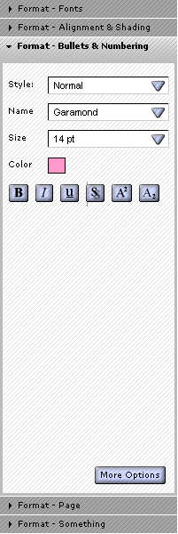
Using
the editing toolbar, users also have access to an extensive suite of
tools. Notes can be dropped into a document; notes are like
mini-forums, and can record specific questions about content in a web
page. Notes can be edited and replied to without shifting into
the full edit mode to support lighter weight collaboration than full
page editing:
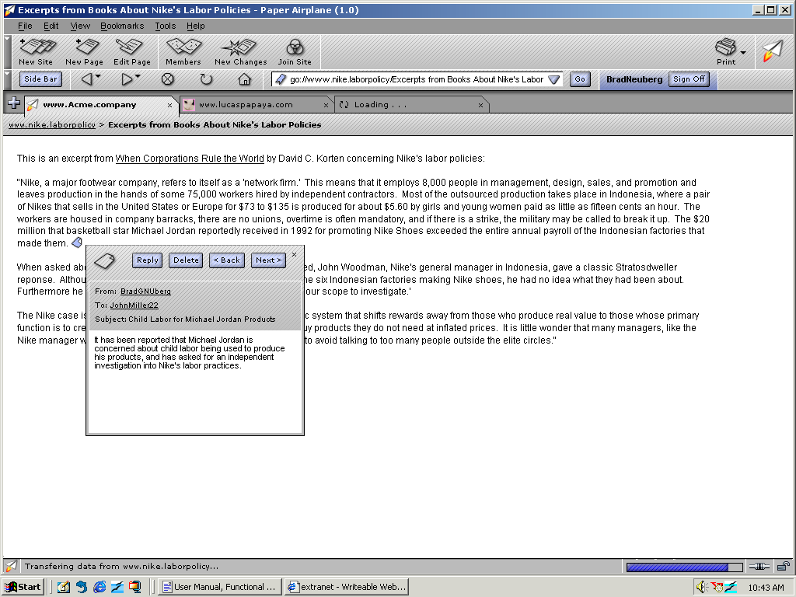
Users can reply and jump through all of the notes in a page.
The
Draw, Quickshapes, and Symbols buttons drop down to show common tools
needed for
diagramming and brainstorming, such as lines, diamonds, etc. so that
these symbols can
be placed into a document for discussion, ala Visio, but without having
to leave the browser:
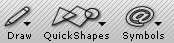
The Signature button
allows a user to
select either the entire page or a portion of it to digitally sign
it, drawing on the user's authentication information that is needed
for single sign on, as described in the section The Smart Browser:
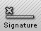
This makes it possible
for users to assert that particular portions
of a document or the entire page was created by them. The selected
portion is digitally signed and saved transparently with the page, and
the browser displays whether the signature is valid
automatically while others are viewing a page.
The Editor also comes
with common
templates, such as ones for resumes, business letters, etc., but
these templates are special: they are Smart Templates. These
templates look just like common Microsoft Office templates, with
fields to guide the user in entering common information such as their
name, job position sought, etc. while editing and creating a
document. However, when a page is edited with a Smart Template we
record the semantic information of each field when we save the web
page. For example, if we are dealing with a resume template, with
fields for the person's name, work experience, etc. as the user fills
this information out we are recording what type of information
this is, which is then saved as a simple XML overlay with the HTML,
similar
to Microsoft's InfoPath application. The Two Way Web then becomes
not only a collaborative and P2P web, but it is also a semantic one in
that many of the pages will have enough bootstrap
information to create custom search engines and aggregators to find
specific kinds of
content, such as resume search engines. The Editor also includes
tools for users to create their own Smart Templates.
A smart template for a
purchase order.
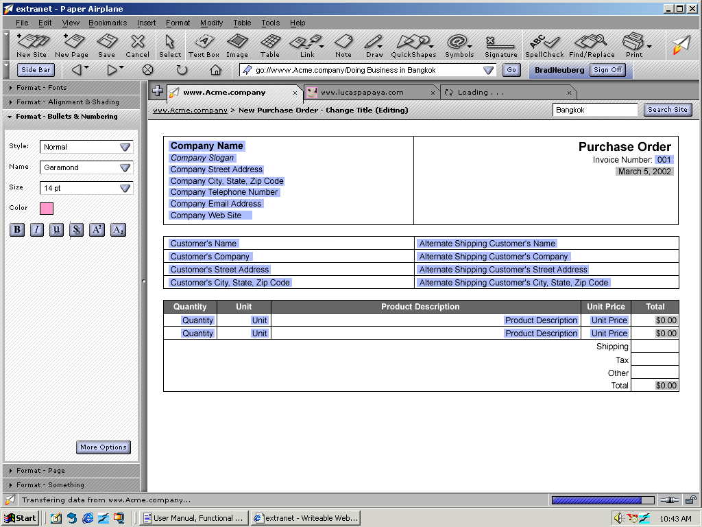
Notice that this smart template includes two kinds of fields; the light blue fields are those that can be changed by the editing user and which record semantic information when saved, while the light gray fields are autocalculated by the smart template itself, such as a total price for this purchase order or a date field.
Just like a Wiki the editor also includes autolinking. Every page you create has a title:
This
title is unique to each page and can be changed during page editing.
While editing a page, if you enter the special characters [[ around
any title, followed by a page name, then ]] again, the editor will
automatically hyperlink that text to a page with that name or add a
"Create" button at the end if it does not exist yet.
The Paper Airplane
browser and editor also support tabs, similar to FireFox. The
browser can have several tabs open showing different web sites and
pages, with some of them being in edit mode. The user can jump
between tabs to quickly compile information while editing, for example,
or can be co-editing several pages at once either alone or with others
(see the Instant Messaging section for details on real-time
collaborative editing). Autolinking and the tabs work seamlessly
together as well. As page names are autolinked in the editor
while you are typing, the user can choose to open the auto-linked page
into a new browser tab to browse this new page or begin editing it as
well. This combination of tags and autolinking make working in the editor feel very
stream of consciousness and organic.
The Editor also brings to Wikis something long missing: autosave. At regular intervals the editor saves the user's contents as drafts that can be later retrieved if the browser crashes or the user accidentally navigates away. Never lose your creative work again.
When a page is saved or created, it is stored into the P2P Mesh..
Paper Airplane uses a P2P Mesh to achieve much of its functionality in a transparent manner so end users do not have to struggle with common administrative tasks. Peer-to-peer means that ordinary end-users machines are used to co-create the network. Napster did this with sharing music files, while Skype does it with finding and routing Internet voice telephone calls using normal end-user machines. The upshot is that very affordable networks can be created in a decentralized, automatic manner.
Paper Airplane uses a P2P Mesh to achieve the following functions: routing around network blockages, such as NATs and firewalls; a domain name system named DisDNS for storing DNS names and resolving them; a presence and communication fabric for instant messaging; and virtualized storage using available P2P nodes for saving and replicating web sites. The nodes in this P2P network are the Paper Airplane browsers themselves.
As users are browsing a site, they will see other users
that are also members of this site in their sidebar. This IM
client is a simple, AOL Instant Messenger type
client where users can communicate one-on-one or form simple group
conferences to communicate as they browse the site. The IM sidebar respects the type of site it is attached to,
such as whether it is Super-Public or Private. If a site is
Super-Public then everyone on the site is shown, while a Private
site reveals private members only. A Restricted Public site would
only show those who have joined the site, reducing presence clutter in
the sidebar and allowing members to focus on each other to work
productively.
While editing a document, if another user would also
like to edit this document a popup will appear saying that another
user is requesting to edit this document. If you agree, the editor
changes into a collaborative editor, with the IM client located in the
sidebar along with
the same formatting palletes that were discussed in the section The
Editor. Every user is assigned a color, and as you edit, add, and
remove content and objects the background color of these sections is
different, similar to SubEthaEdit. Every user also gets a
differently colored cursor so they can see what the other is editing.
The
combination of shared editing with real time communication is
extremely powerful, especially since the tools for single and
collaborative editing are almost identical. The end result is
that users can do private and communal editing without learning a new
skill set.
Tools for navigation in browsers progressed rapidly in the early days of the web, until they finally froze at their current state in about 1995 and have remained relatively unchanged. This is sad as the brower could standardize and embed many tools for much more sophisticated ways of dealing with web sites, especially around collaboration. It's time for innovation.
Paper Airplane takes this to the next level with the concept of the Smart Brower, where the browser embeds standard navigation controls across the Two Way Web Sites it creates. This section discusses how the Smart Browser makes end-user's lives easier.
First, Paper Airplane embeds single signon. When a user first starts Paper Airplane they authenticate themselves against the browser, using a signon dialog to unlock a public/private keypair that is stored on the local machine. This public/private keypair is linked to a handle, similar to an AOL screen name, that is globally unique. It does not establish that they are a specific person but rather that they have a particular handle. Then, as they navigate to each Two Way Web Site, the browser authenticates them in the background using these keypairs against the remote site.
Single signon goes hand in hand with a standard way to join and unjoin Two Way Web Sites. At any site, if the site creator made it open, a user can press the Join button to become a member of this site:
When this is pressed, in the background the browser sends the user's public key to the remote site to be used later for single sign on activities, editing, and site roles.
The next standardized interface in the smart browser is a standard way to track site changes, which is a panel that appears in the left-hand sidebar when selected:
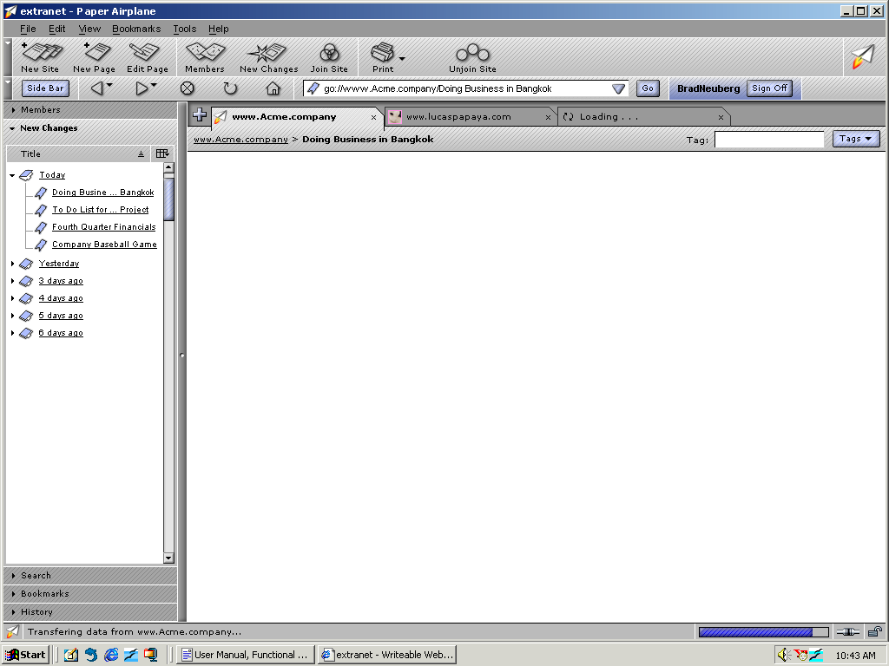
This panel is created by using an RSS stream from the
remote site, and can track recent site edits using the Paper Airplane
Editor, or if the remote site is a blog recent updates to a blog or
corporate site, for example. When users go to a new site they won't
have to wonder what has changed; the Recent Changes panel makes it
easy for them.
Members
of sites can also easily manage roles with the Members sidebar:
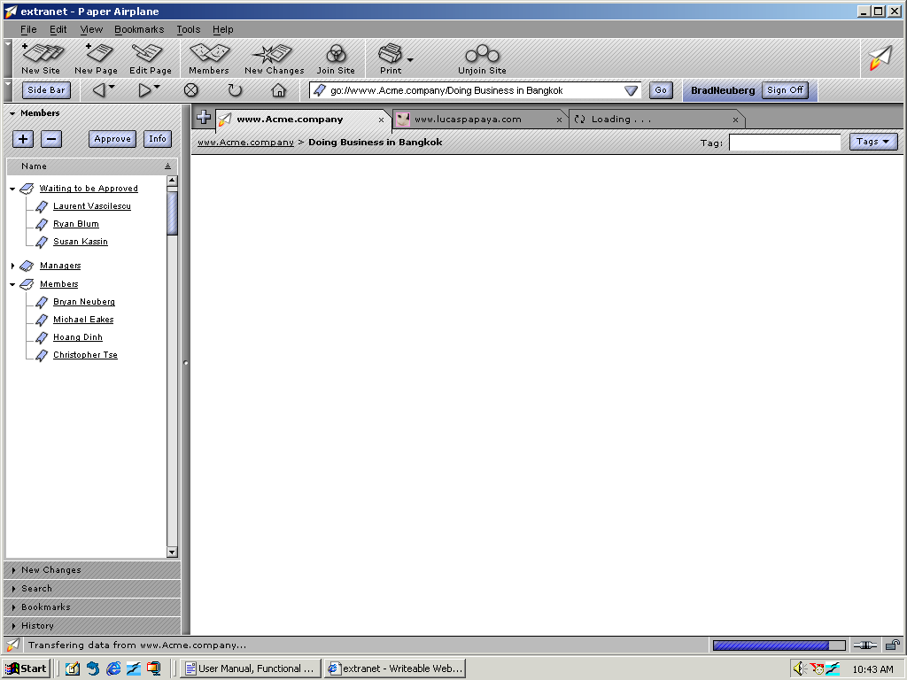
Every page also has a control so that users can tag it
with a given topic, such as "important", “todo", or
“linux”, for example:
Then, by pressing the Navigator section in the sidebar they can view all of the pages in a web site sorted by Tag, by Name, and more. This Navigator makes it possible for users to quickly jump to new adhoc categories created by other users, sorted into bottom-up categories using the tagging control. The Navigator also includes other powerful ways to view a web site: Recently Edited, which shows recently edited pages; and My Recent Pages, which shows your own recently edited or viewed pages so that you can quickly jump back to them. The end result is that structure is brought to collaborative sites in a bottom-up, organic manner rather than through top-down controls that quickly become out of date.
The Navigator also exposes a sorting type called By
Index, which takes a bit of explaining but which is very powerful. As
pages are created and edited, an automatic index is created in the
background. When a user views a site in the Navigator By Index, they
will see an automatic index similar to the index in the back of a
book or the one in Microsoft Help defining all the words, topics, and
relations gleaned from the site itself. Most importantly, if your
site members have used Smart Templates to create pages that have
simple semantic information in them, then we now have higher-level
metadata to hook our index on to. The index can be an extremely
powerful way for users to look into "the back of the book"
in a sense and jump right to the page and section they need to read or
edit.
Having an index to view a site is one of the payoffs for using Smart
Templates when editing and creating your collaborative site.
Creating a new decentralized, collaborative web is useless if users don't have an easy way to find and navigate to content that interests them. The challenge, however, is how to provide a centralized place for users to search and find content without creating a single point of failure or control in the network. The Two Way Web Directory solves this in several ways.
The Two Way Web Directory is actually a virtual portal built into the browser which pulls its data from the P2P Mesh and the tagging metadata entered during site creation in the New Site Wizard. This site looks and feels something like a centralized Yahoo, but is in fact completely peer-to-peer.
The user-interface for the Two Way Web Directory has two major ways of allowing users to find and navigate to sites. The first is through search, so that users can enter terms into a Google-like search box and find sites that match their interests. The search engine actually initiates a search into the P2P Mesh, using the various kinds of metadata and content that were entered into Two Way Web Sites as described above, such as site tags, page tags, automatic indexation, etc. The automatic indexation plays a dual role of making it possible for every site to be quickly searched, since they are already all indexed.
The other major user-interface is for an automatic
Yahoo-like directory to be created using site tags, a folksonomy:
These site tags are organized alphabetically and by popularity, using a Flickr-like UI. The P2P Mesh itself also stores information so that Related Tags can be gleaned, allowing users to jump from one site tag to another to find other sites that match their interests.
This paper began with a series of questions: What if transparent collaboration were a part of web browsers and the web itself? What would an extremely integrated network look like, with instant messaging, site creation, and more all integrated into one whole? Finally, what would this network look like if despite the integration it was extremely decentralized?
Paper Airplane and the Two Way Web are one answer to
these questions, empowering end users with a powerful suite of
collaboration technologies: Instant Site Creation provides one-click
production of online sites; The Editor is a powerful tool to get work
done with others and an answer to what an Internet-centric office
suite could look like; the P2P Mesh makes it possible to
transparently provide site creation, storage, naming, and saving with
zero end-user hassle; the Instant Messaging sidebar allows real-time
communication with site members while browsing and during
co-operative editing; the Smart Browser technologies standardize
navigation tools necessary to make these collaborative sites
accessible and organized in a bottom-up, organic process; and
finally, the Two Way Web Directory provides users with a virtual
centralized location to search and find sites that match their
interests. Even better, all these components work together to
create a system that is more powerful than the sum of its parts.
Once a vision like Paper Airplane is enunciated, however, it is important to not try to build it. Instead, bits and pieces of it should be taken and drastically simplified, with a strong focus on pragmatism and integration into existing systems. Ted Nelson's Xanadu is a cautionary tale of what can happen when someone attempts to build a grand vision; grand visions are meant to stimulate thinking in new directions, not to be built.
Though this paper is focused on creating a vision that pushes our current technological capabilities, it is useful to ask whether the system could be built today as described. Significant engineering and social challenges exist in creating the full Paper Airplane and Two Way Web; peer-to-peer technology is certainly not up to the job of building the kind of P2P Mesh described, and fundamental reliability, security, and performance issues might prevent it from ever being created. The current web is also quite entrenched, and current trends are towards smaller and lighter web browsers that integrate less features rather than more monolithic, integrated ones. Some of the metadata features, such as site and page tagging and the Smart Templates, might be susceptible to spamming and gaming.
However, a great deal of very pragmatic systems can fall out of Paper Airplane. This vision can be sliced and diced into more realistic forms in many different ways that are all quite interesting. Some possibilities:
Instead of integrating these technologies into the browser, they can be brought into existing server-side Wiki systems using DHTML/Ajax technologies, with the P2P components dropped in favor of conventional client/server systems. For example, the Navigator and Instant Messenger sidebars can be created with advanced HTML and served-up along side a next-generation Wiki that has a much more powerful editor, similar to the advanced editor described in this paper.
Portions of the Smart Browser can be broken into seperate, small FireFox plugins developed by different people, with simple server-side APIs and standards for how these browser-side Smart Browser widget work with the remote site. For example, if a Search Smart Browser component is integrated into the browser, remote web sites could implement a simple RESTian or XML-RPC API to be searched in a consistent way by this particular Smart Browser component.
The Paper Airplane Browser component could be maintained, but could be modified to work with centralized hosting services run by Google or Yahoo rather than P2P systems, for example. In this case users and businesses get a powerful collaboration-focused next-generation web browser, but all the functions that were handled by the P2P system instead happen in the centralized computing cluster maintained by a business. New APIs to link the browser to the server could be created, or could use WebDAV and Dynamic DNS for the New Site Wizard, automatic domain naming, and editing to maintain portability and fairness when moving between different storage providers.
Paper Airplane and the Two Way Web can act as an end-user research goal for the pure P2P research that is occuring as part of projects like the IRIS (Infrastructure for Resilient Internet Systems) NSF program, a very strong end-user product to ground theoretical P2P ideas and provide an easy to understand, visible justification.
Aspects of the P2P network could remain, but might simply augment and enhance the end-user's experience rather than work to replace the existing web. For example, if the browser has an Instant Messenger client it could use a spontaneous P2P network between all Paper Airplane Browsers for presence and routing, so that existing client/server web sites don't have to be changed to support a new standard. A P2P Mesh can also be an effective way to do DNS-like naming, for example, or act as a kind of secondary cache for automatically BitTorrenting files above a certain size on the existing web, for example.
Simple prototypes of the Two Way Web peer network and the Paper Airplane browser have been created. An open source implementation of the Two Way Web has been created as a prototype framework named P2P Sockets. P2P Sockets is also an experiment in creating a P2P network that exposes an API that is familiar to existing programmers, namely the BSD Socket interface. It also includes higher level ports of software such as web servers, the Java Servlet and JSP APIs, XML-RPC clients and servers, etc. to a P2P network, as well as a simple distributed implementation of the Domain Name System.
A simple browser prototype has also been created to mimic some of the functionality of the Paper Airplane browser. This prototype is a Mozilla plugin that allows people to easily create collaborative P2P web sites, without setting up servers or spending money. It does this by integrating a web server into the browser itself, including tools to create collaborative online communities that are stored on the machine. The sites are stored locally on a user's machine, and a peer-to-peer network using the P2P Sockets framework is created between all of the Paper Airplane nodes that are running in order to resolve site names and reach normally unreachable peers due to firewalls or NAT devices.
The Paper Airplane project is now finished, having produced a vision and prototypes. Hopefully it has inspired you to imagine what a new kind of web might look like.